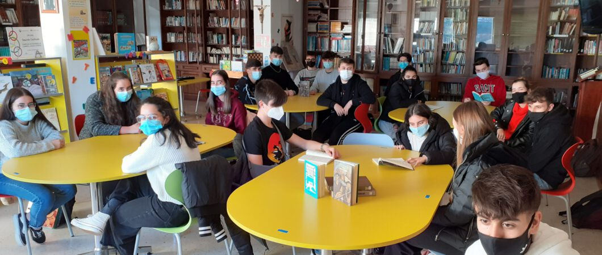

La lectura es una actividad que algunas personas adquieren como hábito y que trae beneficios para su salud, como el retraso del deterioro de las funciones cognitivas (capacidad de resolución de problemas, concentración y empleo del lenguaje, entre otras). Como lo expresó el autor inglés, Joseph Addison, “la lectura es a la mente, lo que el ejercicio al cuerpo”.
Asimismo, la lectura trae consigo otros beneficios como la reducción de los niveles de estrés, la mejora del sueño y el desarrollo de la empatía, ya que la literatura funciona como un simulador de la realidad y el lector adquiere la capacidad de conocer otros puntos de vista y ponerse en la situación de los personajes.
La lectura no puede faltar en nuestro club ya que la lectura da conocimiento y también nuevas formas de pensar y crear nuevas fantasías y nuevas metas, donde te daras cuenta que no hay solo una solución o solo una manera de pensar. Esta área esta abierta desde las 8:00am para las 4:00
